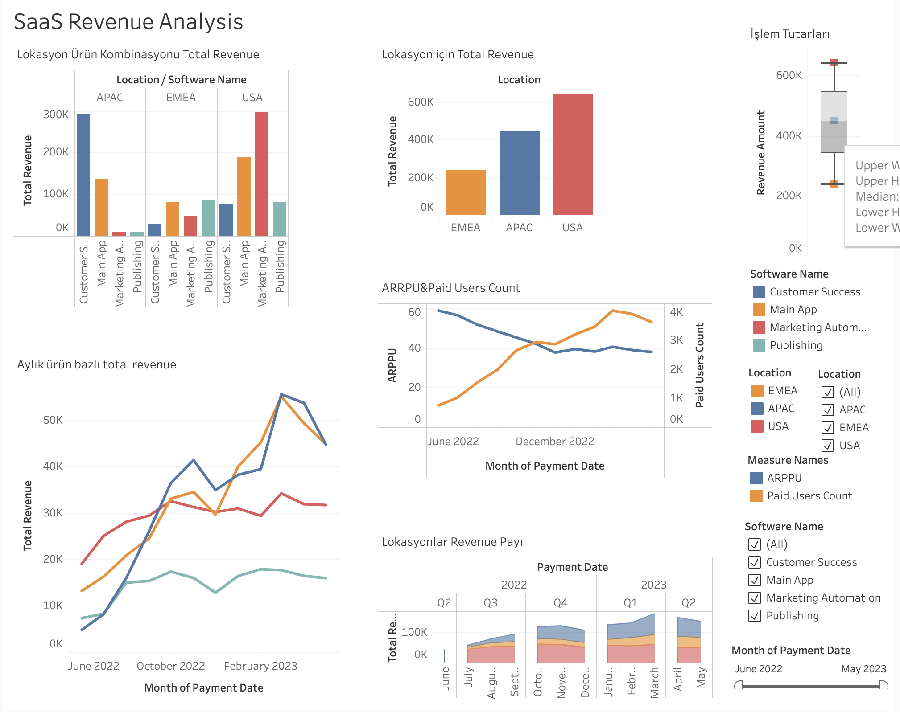

Project 1 – SaaS Revenue Analysis (Tableau)
Description (Value-Driven & Trust-Building Language)
This analysis was designed to give a crystal-clear view of revenue streams in a subscription-based (SaaS) business model, back strategic decisions with data and keep growth sustainable.
What does this analysis deliver?
- It explicitly shows which products generate the most revenue, letting you shape product strategy on solid data and invest more in high-performing lines.
- By visualising where revenue comes from geographically, it helps focus marketing and sales efforts on the right regions.
- It uncovers seasonal revenue shifts so you can catch trends and act at the right moment.
- Metrics like ARPPU let you reassess pricing or craft new offers to unlock potential in different segments.
- Analysing revenue contribution by user segment lays a firm foundation for loyalty programmes, cross-sell campaigns or premium-upgrade strategies.
In short: this analysis is a powerful guide not only for seeing today’s revenues, but for planning future growth with data.
Recommendations (Data-Driven Action Plan)
- Run extra promotions (not discounts) on the highest-earning products and replicate their success factors elsewhere.
- Launch local campaigns, local payment options and support in under-performing regions.
- Create loyalty programmes for high-ARPPU users, offering exclusive content and early access perks.
- Convert freemium users to premium with time-limited trials and personalised email campaigns.
- Staff sales teams up during seasonal peaks (e.g. year-end, early summer).
- Analyse premium-user behaviour in depth and run segment-specific marketing.
Technical Analysis (for Data Analysts / Recruiters)
- Tool: Tableau Public
- Data Structure: SaaS user, revenue & product tables
Dashboard Components:
- Time-Series Revenue Chart (Line)
payment_datewithSUM(revenue_amount)- Identified seasonal effects and campaign periods
- Revenue by Product (Bar)
product_namewithSUM(revenue_amount)- Top earners stand out clearly
- Country-Level Map
countrywithSUM(revenue_amount)
- ARPPU KPI Card
- Formula:
SUM(revenue_amount) / COUNTD(paying_user_id)
- Formula:
- Revenue by User Segment (Treemap / Donut)
user_segmentwithSUM(revenue_amount)- Shows freemium vs premium contribution
Interactive Features: dynamic filters & tool-tips on all charts for deep exploration.
Tool Link:
Tableau